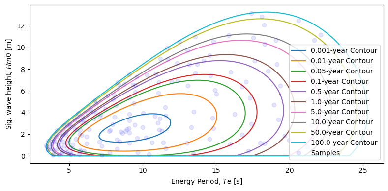
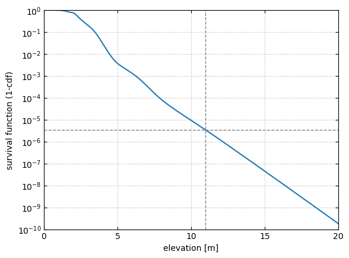

Extreme Conditions Modeling - Full Sea State Approach
Extreme conditions modeling consists of identifying the expected extreme (e.g. 100 yr) response of some quantity of interest, such as WEC motions or mooring loads. Three different methods of estimating extreme conditions were adapted from WDRT: full sea state approach, contour approach, and MLER design wave. This noteboook presents the full sea state approach.
The full sea state approach consists of the following steps:
Take \(N\) samples to represent the sea state. Each sample represents a small area of the sea state and consists of a representative \((H_{s}, T_{e})_i\) pair and a weight \(W_i\) associated with the probability of that sea state area.
For each sample \((H_{s}, T_{e})_i\) calculate the short-term (e.g. 3 hr) extreme for the quantity of interest (e.g. WEC motions or mooring tension).
Integrate over the entire sea state to obtain the long-term extreme. This is a sum of the products of the weight of each sea state times the short-term extreme.
See more details and equations in
[1] Coe, Ryan G., Carlos A. Michelén Ströfer, Aubrey Eckert-Gallup, and Cédric Sallaberry. 2018. “Full Long-Term Design Response Analysis of a Wave Energy Converter.” Renewable Energy 116: 356–66.
NOTE: Prior to running this example it is recommended to become familiar with environmental_contours_example.ipynb and short_term_extremes_example.ipynb since some code blocks are adapted from those examples and used here without the additional description.
We start by importing the relevant modules, including waves.contours submodule which includes the sampling function, and loads.extreme which inlcudes the short-term extreme and full sea state integration functions.
[1]:
from mhkit.wave import resource, contours, graphics
from mhkit.loads import extreme
import matplotlib.pyplot as plt
from mhkit.wave.io import ndbc
import pandas as pd
import numpy as np
Obtain and Process NDBC Buouy Data
The first step will be obtaining the environmental data and creating the contours. See environmental_contours_example.ipynb for more details and explanations of how this is being done in the following code block.
[2]:
parameter = "swden"
buoy_number = "46022"
ndbc_available_data = ndbc.available_data(parameter, buoy_number)
years_of_interest = ndbc_available_data[ndbc_available_data.year < 2013]
filenames = years_of_interest["filename"]
ndbc_requested_data = ndbc.request_data(parameter, filenames)
ndbc_data = {}
for year in ndbc_requested_data:
year_data = ndbc_requested_data[year]
ndbc_data[year] = ndbc.to_datetime_index(parameter, year_data)
Hm0_list = []
Te_list = []
# Iterate over each year and save the result in the initalized dictionary
for year in ndbc_data:
year_data = ndbc_data[year]
Hm0_list.append(resource.significant_wave_height(year_data.T))
Te_list.append(resource.energy_period(year_data.T))
# Concatenate each list of Series into a single Series
Te = pd.concat(Te_list, axis=0)
Hm0 = pd.concat(Hm0_list, axis=0)
# Name each Series and concat into a dataFrame
Te.name = 'Te'
Hm0.name = 'Hm0'
Hm0_Te = pd.concat([Hm0, Te], axis=1)
# Drop any NaNs created from the calculation of Hm0 or Te
Hm0_Te.dropna(inplace=True)
# Sort the DateTime index
Hm0_Te.sort_index(inplace=True)
Hm0_Te_clean = Hm0_Te[Hm0_Te.Hm0 < 20]
Hm0 = Hm0_Te_clean.Hm0.values
Te = Hm0_Te_clean.Te.values
dt = (Hm0_Te_clean.index[2] - Hm0_Te_clean.index[1]).seconds
1. Sampling
The first step is sampling the sea state to get samples \((H_s, T_e)_i\) and associtated weights. For this we will use the waves.contours.samples_full_seastate function. We will sample 20 points between each return level, for 10 levels ranging from 0.001—100 years return periods. For more details on the sampling approach see
[1] Coe, Ryan G., Carlos A. Michelén Ströfer, Aubrey Eckert-Gallup, and Cédric Sallaberry. 2018. “Full Long-Term Design Response Analysis of a Wave Energy Converter.” Renewable Energy 116: 356–66.
[2] Eckert-Gallup, Aubrey C., Cédric J. Sallaberry, Ann R. Dallman, and Vincent S. Neary. 2016. “Application of Principal Component Analysis (PCA) and Improved Joint Probability Distributions to the Inverse First-Order Reliability Method (I-FORM) for Predicting Extreme Sea States.” Ocean Engineering 112 (January): 307–19.
[3]:
# return levels
levels = np.array([0.001, 0.01, 0.05, 0.1, 0.5, 1, 5, 10, 50, 100])
# points per return level interval
npoints = 20
# Create samples
sample_hs, sample_te, sample_weights = contours.samples_full_seastate(
Hm0, Te, npoints, levels, dt
)
We will now plot the samples alongside the contours. First we will create the different contours using contours.environmental_contours. See environmental_contours_example.ipynb for more details on using this function. There are 20 samples, randomly distributed, between each set of return levels.
[4]:
# Create the contours
Te_contours = []
Hm0_contours = []
for period in levels:
copula = contours.environmental_contours(
Hm0, Te, dt, period, "PCA", return_PCA=True
)
Hm0_contours.append(copula["PCA_x1"])
Te_contours.append(copula["PCA_x2"])
# plot
fig, ax = plt.subplots(figsize=(8, 4))
labels = [f"{period}-year Contour" for period in levels]
ax = graphics.plot_environmental_contour(
sample_te,
sample_hs,
Te_contours,
Hm0_contours,
data_label="Samples",
contour_label=labels,
x_label="Energy Period, $Te$ [s]",
y_label="Sig. wave height, $Hm0$ [m]",
ax=ax,
)

2. Short-Term Extreme Distributions
Many different methods for short-term extremes were adapted from WDRT, and a summary and examples can be found in short_term_extremes_example.ipynb. The response quantity of interest is typically related to the WEC itself, e.g. maximum heave displacement, PTO extension, or load on the mooring lines. This requires running a simulation (e.g. WEC-Sim) for each of the 200 sampled sea states \((H_s, T_e)_i\). For the sake of example we will consider the wave elevation as the quantity of
interest (can be thought as a proxy for heave motion in this example). Wave elevation time-series for a specific sea state can be created quickly without running any external software.
NOTE: The majority of the for loop below is simply creating the synthetic data (wave elevation time series). In a realistic case the variables time and data describing each time series would be obtained externally, e.g. through simulation software such as WEC-Sim or CFD. For this reason the details of creating the synthetic data are not presented here, instead assume for each sea state there is time-series data available.
The last lines of the for-loop create the short-term extreme distribution from the time-series using the loads.extreme.short_term_extreme function. The short-term period will be 3-hours and we will use 1-hour “simulations” and the Weibul-tail-fitting method to estimate the 3-hour short-term extreme distributions for each of the 200 samples.
For more details on short-term extreme distributions see short_term_extremes_example.ipynb and
[3] Michelén Ströfer, Carlos A., and Ryan Coe. 2015. “Comparison of Methods for Estimating Short-Term Extreme Response of Wave Energy Converters.” In OCEANS 2015 - MTS/IEEE Washington, 1–6. IEEE.
[5]:
# create the short-term extreme distribution for each sample sea state
t_st = 3.0 * 60.0 * 60.0
gamma = 3.3
t_sim = 1.0 * 60.0 * 60.0
ste_all = []
i = 0
n = len(sample_hs)
for hs, te in zip(sample_hs, sample_te):
tp = te / (0.8255 + 0.03852 * gamma - 0.005537 * gamma**2 + 0.0003154 * gamma**3)
i += 1
print(f"Sea state {i}/{n}. (Hs, Te) = ({hs} m, {te} s). Tp = {tp} s")
# time & frequency arrays
df = 1.0 / t_sim
T_min = tp / 10.0 # s
f_max = 1.0 / T_min
Nf = int(f_max / df) + 1
time = np.linspace(0, t_sim, 2 * Nf + 1)
f = np.linspace(0.0, f_max, Nf)
# spectrum
S = resource.jonswap_spectrum(f, tp, hs, gamma)
# 1-hour elevation time-series
data = resource.surface_elevation(S, time).values.squeeze()
# 3-hour extreme distribution
ste = extreme.short_term_extreme(time, data, t_st, "peaks_weibull_tail_fit")
ste_all.append(ste)
Sea state 1/200. (Hs, Te) = (3.0519011698370164 m, 11.04583834537762 s). Tp = 12.223545140933947 s
Sea state 2/200. (Hs, Te) = (3.4454122915496477 m, 11.169309543379487 s). Tp = 12.36018083260262 s
Sea state 3/200. (Hs, Te) = (3.6662634602868733 m, 10.826118052470603 s). Tp = 11.980398280120792 s
Sea state 4/200. (Hs, Te) = (2.843537679463958 m, 9.454411623864956 s). Tp = 10.462440572801366 s
Sea state 5/200. (Hs, Te) = (3.2498724114450663 m, 9.102778237322505 s). Tp = 10.073316050147112 s
Sea state 6/200. (Hs, Te) = (2.5432758740513246 m, 9.068212764645198 s). Tp = 10.035065208302626 s
Sea state 7/200. (Hs, Te) = (2.4264778631768715 m, 8.911382062896639 s). Tp = 9.861513224074097 s
Sea state 8/200. (Hs, Te) = (2.3680978175067704 m, 7.789046740670324 s). Tp = 8.619514559460379 s
Sea state 9/200. (Hs, Te) = (2.2754848647911032 m, 7.730579014941564 s). Tp = 8.554813007401878 s
Sea state 10/200. (Hs, Te) = (2.2013893785282765 m, 8.531209614759113 s). Tp = 9.440806806340483 s
Sea state 11/200. (Hs, Te) = (2.2734303870548245 m, 8.840100909846239 s). Tp = 9.782632077639974 s
Sea state 12/200. (Hs, Te) = (2.1023284019631188 m, 8.616579481658642 s). Tp = 9.53527880467084 s
Sea state 13/200. (Hs, Te) = (1.4905589789833533 m, 8.267748616842887 s). Tp = 9.149255608485758 s
Sea state 14/200. (Hs, Te) = (1.2979444609623636 m, 8.430409347607648 s). Tp = 9.329259219166191 s
Sea state 15/200. (Hs, Te) = (2.132588467318634 m, 9.0814844673542 s). Tp = 10.049751939367129 s
Sea state 16/200. (Hs, Te) = (1.6432774588959944 m, 9.638029185709314 s). Tp = 10.665635430963668 s
Sea state 17/200. (Hs, Te) = (1.6876474061826714 m, 10.244402846851779 s). Tp = 11.336660625022391 s
Sea state 18/200. (Hs, Te) = (2.3000321378643753 m, 11.28775917735869 s). Tp = 12.49125956131476 s
Sea state 19/200. (Hs, Te) = (2.4146227608441593 m, 11.147740911966473 s). Tp = 12.336312554662857 s
Sea state 20/200. (Hs, Te) = (2.6103200843167143 m, 9.983394136743243 s). Tp = 11.047823177792889 s
Sea state 21/200. (Hs, Te) = (4.068731647379028 m, 13.47865291827843 s). Tp = 14.915746295934497 s
Sea state 22/200. (Hs, Te) = (3.6954884327563504 m, 11.566787354484731 s). Tp = 12.80003771033773 s
Sea state 23/200. (Hs, Te) = (4.480207105259814 m, 11.52005655504381 s). Tp = 12.748324475128467 s
Sea state 24/200. (Hs, Te) = (3.9561742254336414 m, 10.01673299203202 s). Tp = 11.084716620357161 s
Sea state 25/200. (Hs, Te) = (3.8531220807180997 m, 9.102625782286212 s). Tp = 10.073147340361595 s
Sea state 26/200. (Hs, Te) = (3.5663781572345914 m, 8.07240817659649 s). Tp = 8.933087979144979 s
Sea state 27/200. (Hs, Te) = (2.908241307240586 m, 7.952039998258466 s). Tp = 8.799886150959386 s
Sea state 28/200. (Hs, Te) = (2.464190314138586 m, 6.351176628326459 s). Tp = 7.028338799370605 s
Sea state 29/200. (Hs, Te) = (1.8859920748196535 m, 5.834077602503495 s). Tp = 6.4561066982983455 s
Sea state 30/200. (Hs, Te) = (1.7529151360331678 m, 6.187059223348201 s). Tp = 6.846723203936496 s
Sea state 31/200. (Hs, Te) = (1.1446025863887235 m, 6.175904417658782 s). Tp = 6.834379073358122 s
Sea state 32/200. (Hs, Te) = (1.2892599022789482 m, 7.0427301077881275 s). Tp = 7.793625680208137 s
Sea state 33/200. (Hs, Te) = (0.8966054052018009 m, 7.2246845535200235 s). Tp = 7.994980100891668 s
Sea state 34/200. (Hs, Te) = (0.6457634910721332 m, 8.242602318588398 s). Tp = 9.121428213024211 s
Sea state 35/200. (Hs, Te) = (1.1549727781983783 m, 9.080002152257277 s). Tp = 10.048111579900173 s
Sea state 36/200. (Hs, Te) = (1.2334407129813119 m, 10.628185539873787 s). Tp = 11.761362211790303 s
Sea state 37/200. (Hs, Te) = (1.2431677156081726 m, 11.406426838366153 s). Tp = 12.62257956308726 s
Sea state 38/200. (Hs, Te) = (1.1698012492327046 m, 12.996421545991407 s). Tp = 14.38209943607513 s
Sea state 39/200. (Hs, Te) = (2.618620581508073 m, 13.325913201158178 s). Tp = 14.746721476934301 s
Sea state 40/200. (Hs, Te) = (3.470102355731644 m, 14.741323374979535 s). Tp = 16.313042620850247 s
Sea state 41/200. (Hs, Te) = (5.692307434347409 m, 15.021145316541375 s). Tp = 16.62269916543804 s
Sea state 42/200. (Hs, Te) = (6.063254834692772 m, 14.912923656204937 s). Tp = 16.502938916465823 s
Sea state 43/200. (Hs, Te) = (6.480903322872717 m, 13.062850502306475 s). Tp = 14.45561104477273 s
Sea state 44/200. (Hs, Te) = (5.772781251171104 m, 11.063804638270845 s). Tp = 12.24342699918036 s
Sea state 45/200. (Hs, Te) = (4.817270478445196 m, 9.409534348102964 s). Tp = 10.41277848388365 s
Sea state 46/200. (Hs, Te) = (3.8173661650453172 m, 7.153726211432188 s). Tp = 7.916456183510652 s
Sea state 47/200. (Hs, Te) = (3.555645519825636 m, 7.0772788368068404 s). Tp = 7.831857993185889 s
Sea state 48/200. (Hs, Te) = (2.3757710877788805 m, 5.743160152018138 s). Tp = 6.355495633265744 s
Sea state 49/200. (Hs, Te) = (2.0006463135772363 m, 5.725278997544492 s). Tp = 6.3357079908934395 s
Sea state 50/200. (Hs, Te) = (1.5326631253318903 m, 5.450682138605642 s). Tp = 6.03183362700667 s
Sea state 51/200. (Hs, Te) = (1.0513428658700548 m, 5.250602616249876 s). Tp = 5.810421634831748 s
Sea state 52/200. (Hs, Te) = (0.5265157588947252 m, 5.743448169453037 s). Tp = 6.355814359106806 s
Sea state 53/200. (Hs, Te) = (0.4532800070739075 m, 6.025390228156072 s). Tp = 6.667817067631559 s
Sea state 54/200. (Hs, Te) = (0.3375768229335862 m, 7.7442235989089925 s). Tp = 8.569912376308078 s
Sea state 55/200. (Hs, Te) = (0.30102216405234467 m, 9.656746479427033 s). Tp = 10.686348361709246 s
Sea state 56/200. (Hs, Te) = (0.12542290090024186 m, 10.426998603044929 s). Tp = 11.538724732660175 s
Sea state 57/200. (Hs, Te) = (0.6729890509283177 m, 11.570361355358964 s). Tp = 12.803992771027009 s
Sea state 58/200. (Hs, Te) = (1.5175554651966627 m, 14.539941741525709 s). Tp = 16.090189686549614 s
Sea state 59/200. (Hs, Te) = (2.542385963739924 m, 14.83027643922333 s). Tp = 16.411479856867146 s
Sea state 60/200. (Hs, Te) = (3.843301514688319 m, 16.274667680028315 s). Tp = 18.009872027845976 s
Sea state 61/200. (Hs, Te) = (0.21703512911091222 m, 13.455423054650405 s). Tp = 14.890039665274477 s
Sea state 62/200. (Hs, Te) = (1.0647431724172083 m, 15.96883933443384 s). Tp = 17.67143627757849 s
Sea state 63/200. (Hs, Te) = (1.9266398513146878 m, 16.76677465034196 s). Tp = 18.554447421556524 s
Sea state 64/200. (Hs, Te) = (2.9446481669173643 m, 17.411128698164656 s). Tp = 19.267502469442523 s
Sea state 65/200. (Hs, Te) = (5.325927110106066 m, 17.28929200677703 s). Tp = 19.132675555410962 s
Sea state 66/200. (Hs, Te) = (6.358535119949946 m, 16.75931175233696 s). Tp = 18.546188829696494 s
Sea state 67/200. (Hs, Te) = (7.412694605997036 m, 14.620760342427937 s). Tp = 16.179625163103456 s
Sea state 68/200. (Hs, Te) = (6.912756247780623 m, 12.373393694903546 s). Tp = 13.692644383076056 s
Sea state 69/200. (Hs, Te) = (6.836728394398719 m, 11.960299344373112 s). Tp = 13.235505931173343 s
Sea state 70/200. (Hs, Te) = (5.355536467460859 m, 9.079058011369364 s). Tp = 10.047066774752572 s
Sea state 71/200. (Hs, Te) = (4.671151051589706 m, 8.180105150206973 s). Tp = 9.052267599315739 s
Sea state 72/200. (Hs, Te) = (3.4423336307698715 m, 6.6820931438917155 s). Tp = 7.394537619180891 s
Sea state 73/200. (Hs, Te) = (3.042300100254776 m, 6.127122298527252 s). Tp = 6.7803958068436145 s
Sea state 74/200. (Hs, Te) = (2.3786123268272035 m, 5.496412100399395 s). Tp = 6.082439315303118 s
Sea state 75/200. (Hs, Te) = (1.5041052101768 m, 4.9882001950273755 s). Tp = 5.5200418790709875 s
Sea state 76/200. (Hs, Te) = (1.1787130334573301 m, 4.923771573828079 s). Tp = 5.448743881130676 s
Sea state 77/200. (Hs, Te) = (0.7230899256428956 m, 5.085896456279929 s). Tp = 5.628154511374791 s
Sea state 78/200. (Hs, Te) = (0.6595252571108683 m, 5.241814253185951 s). Tp = 5.800696256886872 s
Sea state 79/200. (Hs, Te) = (0.4307357404436535 m, 5.7331571793437535 s). Tp = 6.344426144087493 s
Sea state 80/200. (Hs, Te) = (0.07857080829669981 m, 7.233311179831642 s). Tp = 8.004526497718864 s
Sea state 81/200. (Hs, Te) = (0.46027925182362306 m, 17.190680093637045 s). Tp = 19.023549644456015 s
Sea state 82/200. (Hs, Te) = (1.1980708521021082 m, 18.013198526276145 s). Tp = 19.93376495598297 s
Sea state 83/200. (Hs, Te) = (3.3456270989608847 m, 19.22345321864848 s). Tp = 21.27305695009685 s
Sea state 84/200. (Hs, Te) = (4.7172043745682934 m, 18.93499681508312 s). Tp = 20.95384533754884 s
Sea state 85/200. (Hs, Te) = (6.847539405620025 m, 17.01205239650382 s). Tp = 18.82587667015952 s
Sea state 86/200. (Hs, Te) = (7.7231278201867735 m, 16.002541319345347 s). Tp = 17.7087315666298 s
Sea state 87/200. (Hs, Te) = (7.629081235847672 m, 13.589062961401245 s). Tp = 15.037928252968927 s
Sea state 88/200. (Hs, Te) = (8.452363775230276 m, 13.697027484905862 s). Tp = 15.157403949191693 s
Sea state 89/200. (Hs, Te) = (6.786448289244335 m, 11.096803430725068 s). Tp = 12.279944121425705 s
Sea state 90/200. (Hs, Te) = (5.894927231129716 m, 9.486667762348933 s). Tp = 10.498135859343025 s
Sea state 91/200. (Hs, Te) = (4.358786891532466 m, 7.463316562369551 s). Tp = 8.259055043964198 s
Sea state 92/200. (Hs, Te) = (3.9467659355519693 m, 6.83220935253828 s). Tp = 7.560659211350037 s
Sea state 93/200. (Hs, Te) = (3.1553632519540327 m, 5.7986464312643555 s). Tp = 6.416897857149677 s
Sea state 94/200. (Hs, Te) = (2.4326564397131407 m, 5.386310322285478 s). Tp = 5.960598490479192 s
Sea state 95/200. (Hs, Te) = (1.9880614356841193 m, 4.766775125231435 s). Tp = 5.275008478132455 s
Sea state 96/200. (Hs, Te) = (1.293408716110891 m, 4.581909760591489 s). Tp = 5.070432776495719 s
Sea state 97/200. (Hs, Te) = (0.9616341076852011 m, 4.6589618685367205 s). Tp = 5.15570017678017 s
Sea state 98/200. (Hs, Te) = (0.666386186607189 m, 4.855002832015561 s). Tp = 5.372643019109433 s
Sea state 99/200. (Hs, Te) = (0.264660735105467 m, 5.103153352076978 s). Tp = 5.647251336638027 s
Sea state 100/200. (Hs, Te) = (0.12685463433629815 m, 5.661138705021298 s). Tp = 6.264729063219917 s
Sea state 101/200. (Hs, Te) = (1.1268237311741414 m, 18.301713991606317 s). Tp = 20.25304192745854 s
Sea state 102/200. (Hs, Te) = (1.845198442336088 m, 19.674565478195856 s). Tp = 21.77226677879343 s
Sea state 103/200. (Hs, Te) = (4.413499842939948 m, 20.172795771988145 s). Tp = 22.32361836446093 s
Sea state 104/200. (Hs, Te) = (6.483193116894594 m, 19.359981891388735 s). Tp = 21.424142303882665 s
Sea state 105/200. (Hs, Te) = (7.841572973402071 m, 18.519669560552952 s). Tp = 20.494235909520757 s
Sea state 106/200. (Hs, Te) = (8.790048122755998 m, 17.636792469179515 s). Tp = 19.51722650173635 s
Sea state 107/200. (Hs, Te) = (8.753396102235087 m, 14.14643164730843 s). Tp = 15.654723563501475 s
Sea state 108/200. (Hs, Te) = (8.426752536347962 m, 13.182638875844871 s). Tp = 14.58817124939662 s
Sea state 109/200. (Hs, Te) = (7.538945072970559 m, 10.89657968634219 s). Tp = 12.058372530277524 s
Sea state 110/200. (Hs, Te) = (6.52392465965872 m, 9.485481750157293 s). Tp = 10.496823394583998 s
Sea state 111/200. (Hs, Te) = (5.209202704421955 m, 7.9749237506419925 s). Tp = 8.825209768009335 s
Sea state 112/200. (Hs, Te) = (4.0540640761131765 m, 6.580592173706031 s). Tp = 7.282214620045882 s
Sea state 113/200. (Hs, Te) = (3.3049358170467524 m, 5.894452158235983 s). Tp = 6.522918386491186 s
Sea state 114/200. (Hs, Te) = (2.169848292969151 m, 4.7404643760311345 s). Tp = 5.245892478016787 s
Sea state 115/200. (Hs, Te) = (1.9534343747113685 m, 4.584560512331687 s). Tp = 5.073366151269149 s
Sea state 116/200. (Hs, Te) = (1.4832783753736873 m, 4.356627084101155 s). Tp = 4.821130471007753 s
Sea state 117/200. (Hs, Te) = (1.0598538682129985 m, 4.317024005381985 s). Tp = 4.777304913788158 s
Sea state 118/200. (Hs, Te) = (0.7258158734724787 m, 4.42511891003475 s). Tp = 4.896924892391318 s
Sea state 119/200. (Hs, Te) = (0.3218056251115961 m, 4.837161638335263 s). Tp = 5.352899598148494 s
Sea state 120/200. (Hs, Te) = (0.1529178499563497 m, 5.0948910210045915 s). Tp = 5.6381080761923466 s
Sea state 121/200. (Hs, Te) = (1.4617033785832907 m, 19.967713785536485 s). Tp = 22.09667054568959 s
Sea state 122/200. (Hs, Te) = (2.798041717936526 m, 21.495323765808678 s). Tp = 23.787154234454817 s
Sea state 123/200. (Hs, Te) = (5.259564944383678 m, 21.394671367392732 s). Tp = 23.675770281774085 s
Sea state 124/200. (Hs, Te) = (8.35812856579741 m, 20.660736018189226 s). Tp = 22.863582778118428 s
Sea state 125/200. (Hs, Te) = (8.439618161440924 m, 19.14134618167327 s). Tp = 21.18219566447295 s
Sea state 126/200. (Hs, Te) = (10.292141263188919 m, 18.299482065544524 s). Tp = 20.250572033538813 s
Sea state 127/200. (Hs, Te) = (9.289089256709273 m, 14.555275372180486 s). Tp = 16.107158188226222 s
Sea state 128/200. (Hs, Te) = (8.542968895321545 m, 12.324863083963992 s). Tp = 13.638939440545823 s
Sea state 129/200. (Hs, Te) = (7.468390108552663 m, 10.287748814954023 s). Tp = 11.384628138325445 s
Sea state 130/200. (Hs, Te) = (6.5707446111457015 m, 9.319715314854362 s). Tp = 10.313382949284977 s
Sea state 131/200. (Hs, Te) = (5.60872818188617 m, 8.051983881072617 s). Tp = 8.910486046136219 s
Sea state 132/200. (Hs, Te) = (3.991538414403644 m, 6.252186602100548 s). Tp = 6.91879446092924 s
Sea state 133/200. (Hs, Te) = (3.626524247915902 m, 5.902411884648774 s). Tp = 6.531726778581856 s
Sea state 134/200. (Hs, Te) = (2.6518984771001484 m, 5.066182973924612 s). Tp = 5.606339178403159 s
Sea state 135/200. (Hs, Te) = (1.8091038427854655 m, 4.457956383976893 s). Tp = 4.933263496351967 s
Sea state 136/200. (Hs, Te) = (1.2989406338592269 m, 3.994531032515327 s). Tp = 4.420427754426217 s
Sea state 137/200. (Hs, Te) = (1.0499593452251907 m, 4.193532941030377 s). Tp = 4.640647237620415 s
Sea state 138/200. (Hs, Te) = (0.6433991714660491 m, 4.216701883166105 s). Tp = 4.666286451341325 s
Sea state 139/200. (Hs, Te) = (0.35316386403086203 m, 4.501882113825003 s). Tp = 4.981872585572572 s
Sea state 140/200. (Hs, Te) = (0.2744545504333075 m, 4.488377393677282 s). Tp = 4.966927992760345 s
Sea state 141/200. (Hs, Te) = (0.8068170560899437 m, 21.216684038752813 s). Tp = 23.478805952031312 s
Sea state 142/200. (Hs, Te) = (3.069808490956658 m, 22.045232858515607 s). Tp = 24.39569461029022 s
Sea state 143/200. (Hs, Te) = (5.267494602662645 m, 22.51536680045854 s). Tp = 24.915954212317576 s
Sea state 144/200. (Hs, Te) = (8.574728268404309 m, 21.303061011945967 s). Tp = 23.574392434283755 s
Sea state 145/200. (Hs, Te) = (10.671063465675838 m, 19.060263176557495 s). Tp = 21.092467592940014 s
Sea state 146/200. (Hs, Te) = (10.876296838223272 m, 17.532968720866293 s). Tp = 19.402333069972638 s
Sea state 147/200. (Hs, Te) = (10.534388756527077 m, 14.801445206897775 s). Tp = 16.379574639826952 s
Sea state 148/200. (Hs, Te) = (9.779306267722461 m, 13.051496141467442 s). Tp = 14.443046082483523 s
Sea state 149/200. (Hs, Te) = (8.921235180657721 m, 11.717822520116258 s). Tp = 12.967176238644907 s
Sea state 150/200. (Hs, Te) = (7.273929502655918 m, 9.597743252685069 s). Tp = 10.62105421354321 s
Sea state 151/200. (Hs, Te) = (5.55737098699723 m, 7.627379062574176 s). Tp = 8.440609880680139 s
Sea state 152/200. (Hs, Te) = (4.408665215071578 m, 6.445613979770078 s). Tp = 7.132845057045867 s
Sea state 153/200. (Hs, Te) = (3.312948927456145 m, 5.3889083767085015 s). Tp = 5.963473549349823 s
Sea state 154/200. (Hs, Te) = (2.9187259448491996 m, 5.025725684161813 s). Tp = 5.561568334196267 s
Sea state 155/200. (Hs, Te) = (1.783850908447242 m, 4.109944171454214 s). Tp = 4.548146237131219 s
Sea state 156/200. (Hs, Te) = (1.3804145578511127 m, 3.948052538207203 s). Tp = 4.368993725111841 s
Sea state 157/200. (Hs, Te) = (1.101209720396516 m, 3.8107141547419805 s). Tp = 4.217012329279396 s
Sea state 158/200. (Hs, Te) = (0.6155862117958195 m, 3.848386306392394 s). Tp = 4.258701084071616 s
Sea state 159/200. (Hs, Te) = (0.525084466395597 m, 3.9369025968803957 s). Tp = 4.356654977534205 s
Sea state 160/200. (Hs, Te) = (0.09750512397836705 m, 4.300920721697868 s). Tp = 4.759484698710284 s
Sea state 161/200. (Hs, Te) = (1.8205359120028697 m, 23.730249683977565 s). Tp = 26.260367855113387 s
Sea state 162/200. (Hs, Te) = (3.976921009811278 m, 23.565594395719824 s). Tp = 26.07815702730834 s
Sea state 163/200. (Hs, Te) = (6.204240115221088 m, 22.723791210681824 s). Tp = 25.146600823935152 s
Sea state 164/200. (Hs, Te) = (10.125799848939408 m, 22.40066350074622 s). Tp = 24.78902125186606 s
Sea state 165/200. (Hs, Te) = (10.66793996073962 m, 21.6908578381681 s). Tp = 24.003536140955944 s
Sea state 166/200. (Hs, Te) = (12.060622651625676 m, 18.266815645632505 s). Tp = 20.21442272138141 s
Sea state 167/200. (Hs, Te) = (11.121735584154075 m, 15.855584181171377 s). Tp = 17.54610586488723 s
Sea state 168/200. (Hs, Te) = (10.998739267749489 m, 13.56417998032559 s). Tp = 15.01039224955217 s
Sea state 169/200. (Hs, Te) = (8.956292813877395 m, 11.186026584968262 s). Tp = 12.378680244425786 s
Sea state 170/200. (Hs, Te) = (6.621433952777892 m, 8.741275725438278 s). Tp = 9.673270156443893 s
Sea state 171/200. (Hs, Te) = (6.533492611294109 m, 8.37223466140765 s). Tp = 9.26488195049804 s
Sea state 172/200. (Hs, Te) = (4.835217043872919 m, 6.811976335865213 s). Tp = 7.53826895133469 s
Sea state 173/200. (Hs, Te) = (3.611112043718707 m, 5.53893766445577 s). Tp = 6.129498953117237 s
Sea state 174/200. (Hs, Te) = (2.833447601414693 m, 4.825371501732234 s). Tp = 5.339852397702617 s
Sea state 175/200. (Hs, Te) = (2.0009470208228026 m, 4.0628436045232785 s). Tp = 4.496023809838518 s
Sea state 176/200. (Hs, Te) = (1.5779173712229868 m, 3.847821538178794 s). Tp = 4.2580761002960745 s
Sea state 177/200. (Hs, Te) = (1.2643248630801083 m, 3.814335921677443 s). Tp = 4.221020248845238 s
Sea state 178/200. (Hs, Te) = (0.8497384887288895 m, 3.660673074170486 s). Tp = 4.050973875337359 s
Sea state 179/200. (Hs, Te) = (0.5569801970656724 m, 3.580383590440513 s). Tp = 3.9621239304052653 s
Sea state 180/200. (Hs, Te) = (0.15728439930305368 m, 3.9432178300420313 s). Tp = 4.363643540576057 s
Sea state 181/200. (Hs, Te) = (1.1422392525115137 m, 24.57816097776294 s). Tp = 27.198683413518285 s
Sea state 182/200. (Hs, Te) = (4.420537323675632 m, 24.662533773594717 s). Tp = 27.292052033107773 s
Sea state 183/200. (Hs, Te) = (7.755814565466879 m, 23.99477020392714 s). Tp = 26.553091541193766 s
Sea state 184/200. (Hs, Te) = (11.148663000514297 m, 22.117310762471593 s). Tp = 24.475457457176223 s
Sea state 185/200. (Hs, Te) = (12.473228354145467 m, 20.601270499596303 s). Tp = 22.797777048564743 s
Sea state 186/200. (Hs, Te) = (12.819497160322692 m, 18.09058901457892 s). Tp = 20.019406814723713 s
Sea state 187/200. (Hs, Te) = (13.145047626413522 m, 17.4098903839333 s). Tp = 19.266132126202617 s
Sea state 188/200. (Hs, Te) = (10.547709475660533 m, 12.521271889157314 s). Tp = 13.856289343856886 s
Sea state 189/200. (Hs, Te) = (9.943350925680063 m, 11.66905560140366 s). Tp = 12.913209793217327 s
Sea state 190/200. (Hs, Te) = (7.5242441111748075 m, 9.07975143213084 s). Tp = 10.047834128004949 s
Sea state 191/200. (Hs, Te) = (6.760594320713308 m, 8.273354886983919 s). Tp = 9.155459618901123 s
Sea state 192/200. (Hs, Te) = (5.109171994744844 m, 6.763731790622878 s). Tp = 7.484880574813655 s
Sea state 193/200. (Hs, Te) = (3.949044029389487 m, 5.6211544147327634 s). Tp = 6.220481649670304 s
Sea state 194/200. (Hs, Te) = (2.8239259484743475 m, 4.63068616046699 s). Tp = 5.1244097139673705 s
Sea state 195/200. (Hs, Te) = (2.344941275016907 m, 4.180452084450019 s). Tp = 4.626171700690346 s
Sea state 196/200. (Hs, Te) = (1.3703724180063444 m, 3.5598449780265367 s). Tp = 3.939395492044637 s
Sea state 197/200. (Hs, Te) = (0.9714898696699685 m, 3.4362402988581957 s). Tp = 3.802612087453428 s
Sea state 198/200. (Hs, Te) = (0.858186544460902 m, 3.4532722006476217 s). Tp = 3.821459929857905 s
Sea state 199/200. (Hs, Te) = (0.5908442916930283 m, 3.5489601073269093 s). Tp = 3.9273500769127194 s
Sea state 200/200. (Hs, Te) = (0.09805058620711124 m, 3.879098338016793 s). Tp = 4.292687631148663 s
3. Long-Term Extreme Distribution
Finally we integrate the weighted short-term extreme distributions over the entire sea state space to obtain the extreme distribution, assuming a 3-hour sea state coherence. For this we use the loads.extreme.full_seastate_long_term_extreme function. The integral reduces to a sum over the 200 bins of the weighted short-term extreme distributions.
[6]:
lte = extreme.full_seastate_long_term_extreme(ste_all, sample_weights)
Similar to the short-term extreme functions, the output of long-term extreme function is a probability distribution (scipy.stats.rv_continuous). This object provides common statistical functions (PDF, CDF, PPF, etc.) and metrics (expected value, median, etc). Here, we will look at the survival function and the 100-year return level.
The value of the survival function at a given return level (e.g. 100-years) may be calculated using the return_year_value function. This gives a 100-year wave of about 11 meters.
[7]:
t_st_hr = t_st / (60.0 * 60.0)
t_return_yr = 100.0
x_t = extreme.return_year_value(lte.ppf, t_return_yr, t_st_hr)
print(f"100-year elevation: {x_t} m")
100-year elevation: 10.978019989377701 m
Finally we plot the survival function and show the 100-year return level (dashed grey lines). The 100-year value is about 11.1 m (where the grey line intersects the x-axis)
[8]:
x = np.linspace(0, 20, 1000)
fig, ax = plt.subplots()
# plot survival function
ax.semilogy(x, lte.sf(x))
# format plot
plt.grid(True, which="major", linestyle=":")
ax.tick_params(axis="both", which="major", direction="in")
ax.xaxis.set_ticks_position("both")
ax.yaxis.set_ticks_position("both")
plt.minorticks_off()
ax.set_xticks([0, 5, 10, 15, 20])
ax.set_yticks(1.0 * 10.0 ** (-1 * np.arange(11)))
ax.set_xlabel("elevation [m]")
ax.set_ylabel("survival function (1-cdf)")
ax.set_xlim([0, x[-1]])
ylim = [1e-10, 1]
ax.set_ylim(ylim)
# 100-year return level
s_t = lte.sf(x_t)
ax.plot([0, x[-1]], [s_t, s_t], "--", color="0.5", linewidth=1)
ax.plot([x_t, x_t], ylim, "--", color="0.5", linewidth=1)
[8]:
[<matplotlib.lines.Line2D at 0x23482d13190>]
